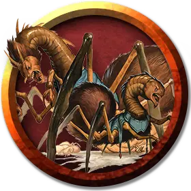

Рой детенышей неоги
Neogi Hatchling Swarm
Средний рой крошечной Аберраций, обычно законно-злая

Класс Доспеха 11
Хиты 52 (8к8 + 16)
Скорость 20 футов, лазая 20 футов
| мод | спас | ||
|---|---|---|---|
| СИЛ | 12 | +1 | +1 |
| ЛОВ | 13 | +1 | +1 |
| ТЕЛ | 14 | +2 | +2 |
| мод | спас | ||
|---|---|---|---|
| ИНТ | 6 | −2 | −2 |
| МДР | 10 | +0 | +0 |
| ХАР | 9 | −1 | −1 |
Сопротивление урону дробящий, колющий, рубящий
Иммунитет к состояниям захват, испуг, окаменение, опутанность, очарование, ошеломление, паралич, сбивание с ног
Чувства тёмное зрение 60 футов, пассивное Восприятие 10
Опасность 3 (700 опыта)
Бонус мастерства +2
Особенности
Паучье лазание. Рой может лазать по сложным поверхностям, включая потолки, без совершения проверок характеристик.
Рой. Рой может занимать пространство другого существа, и наоборот, и стая может перемещаться через любой проход, достаточный для Крохотных детенышей неоги. Рой не может восстанавливать хиты и получать временные хиты.
Действия
Рой укусов. . Рукопашная атака оружием: +3 к попаданию, досягаемость 5 фт., одно существо. Попадание: 22 (6к6 + 1) урона ядом, или 11 (3к6 + 1) урона ядом, если у роя половина хитов или меньше. Цель должна преуспеть в спасброске Телосложения Сл 12, иначе станет отравленной на 1 минуту. Цель может повторять спасбросок в конце каждого своего хода, оканчивая на себе этот эффект при успехе.
Описание
Неоги живут около века. Когда один из них ослабевает из-за преклонного возраста, другие неоги в группе нападают на него и вводят внутрь специальный яд. Токсин превращает старого неоги в раздувшийся кусок плоти. Молодые неоги откладывают на неё яйца, и когда появляются детёныши, они пожирают старого неоги и друг друга, пока не останется лишь несколько самых сильных новорожденных. Порой эти новорожденные, объединенные особой злой целью, сливаются в скользящий по земле рой.
Неоги
Неоги выглядит как паук огромных размеров с шеей и головой угря. Он может отравить тело и разум цели и способен подчинить своей воле даже существ, физически превосходящих его.
Неоги обычно обитают в отдаленных закоулках Материального плана, а также на Астральном и Эфирном планах. Они давно покинули свой родной мир, чтобы завоевать и поглотить существ иных сфер. В эту эпоху они получили власть над бурыми увальнями [umber hulk] и использовали их для строительства изящных паукообразных кораблей, способных пересечь Мультивселенную.